A deep dive into images
and then some…
Chen Hui Jing / @hj_chen
Hello! I'm pretty excited to be here, sharing the stage with so many amazing speakers. So thank you to the organisers for bringing me out. Today, I'd like to share with everyone my journey of trying to figure out images on the web. You see, I have this tendency to go down rabbit holes with things that seem rather straight-forward at first, but then, you get this little inkling that there's something more beneath the surface?
Yeah, that's me. And images. I'm also very annoying and have an incessant need to ask why. Constantly. Which is why I love and appreciate everyone who is still willing to be friends with me. I've been working on the web for a number of years now, and I learned that image optimisation is one of the low-hanging fruits when it comes to web performance.
You may not be able to discern the exact numbers from this chart but know that as page weight has steadily crept up over the years, images on average make up more than 60% of that page weight.
Image sizes matter, because sending smaller images of comparable quality to your users over the interwebs is not only the smart thing to do, it's the right thing to do. But images are not all created equal, some image formats are better suited for certain purposes over others.
JPGs for photographs, choose PNGs over GIFs, don't use BMPs or TIFFs at all. I know all this. But for quite a while, I didn't know why, and it gnawed at me enough that one day I decided to find out.
My name is Hui Jing, you can also call me Jing. This is me in emojis, make what you will of them. The fox is not that obvious, but I use it to indicate that I'm a Mozilla Techspeaker, which is an initiative by Mozilla to support technical evangelists in regional communities around the world by providing resources and funding.
🥑 Developer Advocate 🥑
I also have a day job as a Developer Advocate with Nexmo. Nexmo being a platform that provides APIs for messaging, voice and authentication so developers can easily integrate communications into their applications.
Right, so images. Image making seems to be emblematic of humanity, don't you think? I tried to research if any other species creates images, and it seems that to date, no image making has ever appeared in the careers of primate artists, who would be the most logical next candidate besides human beings to ever do something like that.
Let's talk a bit about prehistoric images. I told you this was a rabbit hole, no? The earliest images date back to the Upper Paleolithic period, and some research has proposed that image making originated in the discovery of the representational capacity of lines, marks or blots of colour.
And the act of imagemaking seemed culturally agnostic. From Namibia to Tanzania, India to Brazil and Australia, prehistoric humans were attempting to reproduce the three-dimensional, full-colour world they lived in by making marks on the surfaces around them.
If you think about it, imagemaking was an analogue process for the longest time. A pigment on a surface. Something physical, something you could touch.
It was photography that brought light into the picture. But of course, the end result was still something persistent, that you could hold in your hand, that you could come back to year after year, even after the photograph had faded and yellowed with time.
Electronic signals
The digital age is one of light and electronic signals. Perhaps it may be more apt to say of light created by electronic signals. I've gone on and one about ancient art work and photography…
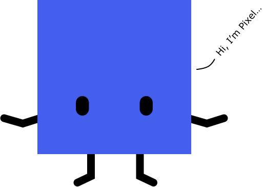
…but really today's story starts off with this little fella, and what it represents. Meet Pixel. No, not the Google phone, not that Pixel. This pixel has been around far longer than that phone.
Pixel is a pretty well-defined character, multiple definitions if you look around, but the most common one calls a pixel the smallest unit of an image which can be displayed on a digital display device, the basic logical unit for representing digital graphics.
Computers have come a long way in a relatively short period of less than a hundred years. The earliest of them having displays that were more indicators of device health rather than program output.
But those panels of light bulbs, which allowed engineers to monitor the internal state of their machine, came to be known as monitors .
CRTs sold by Müller-Uri, Source: The Cathode Ray Tube site
Electronic displays actually pre-date digital computers, with Cathode Ray Tube (CRT) technology becoming commercially available back in 1922. They worked by firing a beam of electrons onto a phosphor-coated screen. The energy from these electrons gets absorbed by the phosphor atoms on the screen, and kicks them up to higher energy levels.
If you remember some high school physics, you may already know that this high energy state is unsustainable and the phosphor atoms will come back down, releasing the extra energy in the form of light, resulting in a bright spot on the screen.
Raster scanning
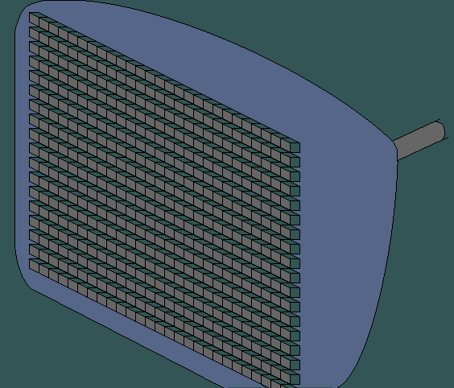
Source: M-SYS MV
There are 2 modes for drawing computer graphics onto a screen. You could do a raster scan, where the electron beam is swept across the screen one row and a time from top to bottom. Varying beam intensity allows for a pattern of illuminated spots across the screen and each of these screen points is a single pixel.
Raster scan
Random scan
Electron beam
Swept across entire screen, one row at a time, from top-to-bottom
Only directed to parts of the screen where image is drawn
Resolution
Poor, due to plotting as discrete point sets
Good, as CRT beam directly follows line path
Picture definition
Stored as set of intensity values (pixels) in refresh buffer area
Stored as set of line drawing instructions in display file
Realism
Variable intensity values allow for realistic shadow and colour patterns
Most suited for line drawing
Drawing method
Screen points (pixels)
Mathematical functions
Source: Prof. Vijay M. Shekhat, CE Department, Computer Graphics
Or you could do something called a random scan which could generate vector graphics and both types of scanning have their pros and cons. Back in the 70s, both raster displays and vector displays were used for computer graphics.
The relatively high price of memory back then made vector displays more affordable, but by today, they've practically all been replaced by raster displays.
Of course, these are merely the mechanics of how an image gets displayed onto a screen. And before that can happen, we must have image data.
All digital files are really just long lists of numbers stored as binary on a storage device, and file formats are what allows us to read and understand the data these numbers represent. Operating systems and applications can use a number of methods to identify all these different file types.
File formats
.
.
.
File extension
External metadata Mac OS type-codes
Mac OS X UTIs
OS/2 extended attr.
POSIX extended attr.
PUIDs
MIME types
FFIDs
File content-based identification
Internal metadata
Filename extensions are probably the most popular method used by most operating systems.
Information about file formats can also be explicitly stored in the file system instead of the file itself as external metadata.
And files themselves will contain information about their own format, as internal metadata. Such information is usually put at the beginning of the file as a file header, or a magic number if it's only a few bytes long.
Image files are a particular type of file format, so their file headers would contain stuff like the image format, resolution, colour space, authoring information, camera model and so on. Broadly speaking, there are 2 kinds of images, raster and vector.
Colour depth
1-bit PNG(2 colours)
2-bit PNG(4 colours)
4-bit PNG(16 colours)
8-bit PNG(256 colours)
24-bit PNG(16,777,216 colours)
Source: Wikipedia, Color depth
A raster image is also known as a bitmap image, which are comprised of pixels in a grid. And each pixel contains a bit of colour information, a combination of the additive primary colours, red, green and blue.
A bitmap is essentially a spatially mapped array of bits. The number of bits per pixel will determine how many unique colours the image can contain, this is also known as colour depth.
Raster displays store per pixel image data as a bitmap in a region of memory called the frame buffer. So clearly, memory is an integral part of the rendering process. The total amount of memory needed is dependant on the resolution of the output signal and the colour depth.
MacPaint
Before computers became a consumer product, each model pretty much had its own suite of software and file formats which weren't all that interoperable.
But when the Macintosh came out in 1984, the MacPaint application introduced a well-defined and well-documented file format for saving image files created with it.
And what's most notable about it is that other applications could use the image files it generated.
MS Paintbrush
Paintbrush for Windows 3.0
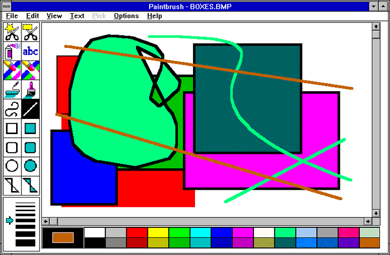
Paintbrush for Windows 3.1
On the Windows side of things, we had BMP, which was released in 1987. As a kid who grew up with Microsoft, shout-out MS-DOS 6.0, I would say this was the first image format I ever encountered.
I never had a Mac, so I never used MacPaint, it was MS Paint (back when it was known as Paintbrush) for me, all day, every day.
Bitmap (BMP)
Bitmap and its corresponding colour table
Colours directly in bitmap itself
Source: Microsoft, Types of Bitmaps
This is an example of a 4-bit BMP image, which means a given pixel can be 1 of 16 colours. Each colour in the table is represented by a 24-bit hexadecimal number, 8 bits each for red, green and blue.
And we can map each pixel to its corresponding colour value based on the colour table. Such bitmaps are called palette-indexed bitmaps, but some bitmaps can store the colours themselves.
The thing is BMP files are usually not compressed, and hence, not great for web use at all.
Graphics Interchange Format (GIF)
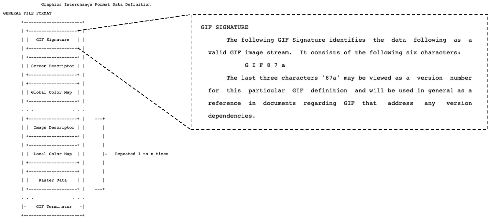
Source: Graphics Interchange Format (tm)
Which brings us to the Graphics Interchange Format. Whether you pronounce it GIF or JIF, what's not up for debate is the fact that this was the first image format built for data transfer.
Developed by CompuServe and released on 15 June, 1987, this is a format that pre-dates me. At the time, memory was at a premium. So how could users access and send files to each other without locking up all their computer's memory?
Steve Wilhite and his team centred the GIF around the Lempel-Ziv-Welch compression algorithm. And as we go along, you'll see that image formats and compression algorithms practically go hand-in-hand.
Compression algorithms
Sorry, your browser doesn't support embedded videos,
but don't worry, you can download it
and watch it with your favourite video player!
Run length compression used by MacPaint
Sorry, your browser doesn't support embedded videos,
but don't worry, you can download it
and watch it with your favourite video player!
Lempel–Ziv–Welch (LZW) compression
Motion graphics by Crystal Law
MacPaint used run-length encoding, which combined repeated data into a shorter single data value and count. This was great for simple black and white pictures, which was pretty much what the MacPaint could achieve. But it couldn't do colour very well.
I won't go into details of the actual LZW algorithm, but it encodes the image by creating a dictionary of repeated sequences of colours and could achieve much better compression rates than any prior image format.
First band photo on the web
Source: The Cernettes
The first photo of a band published on the internet was a promotional shot for Les Horribles Cernettes, a particle physics parody pop group at CERN. And what format was this photo in? GIF.
This was back in 1992 on the World Wide Web browser. So it's definitely no surprise that when Mosaic was released in 1993, it launched with support for 2 image formats, GIF and JPG.
Joint Photographic Experts Group (JPEG)
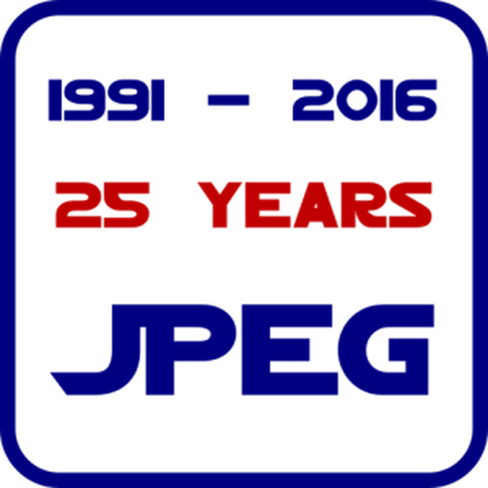
JPG is both the name of the committee that created the JPG standard, as well as the name of the image compression algorithm itself.
Jon, who is coming up immediately after this, is a member of that committee and will tell you more about it and what they do. We swapped slots because I'm talking about the past and present while he will be covering what we have now and what's to come in the future.
JPG compression
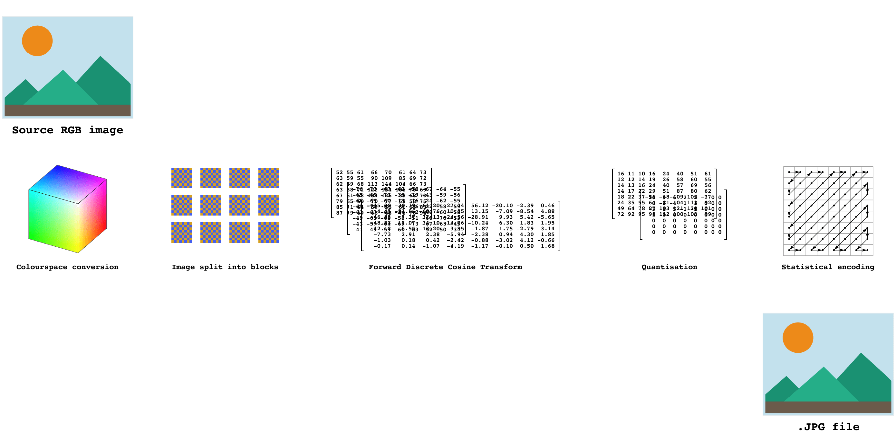
Reference: How JPG works
JPG was revolutionary when it was released in 1992. A lot of the information here I learned from Colt McAnlis, who wrote a really in-depth explainer on how JPG works, which you should really check out if you're interested in this.
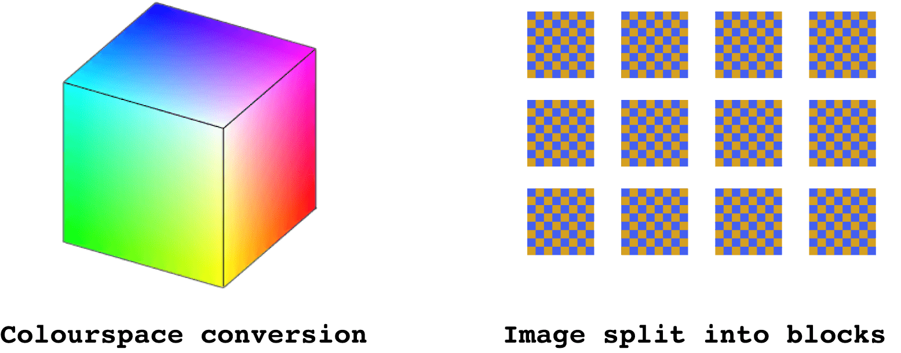
Reference: How JPG works
JPG converts from RGB to Y,Cb,Cr colour model, comprising Luminance, Chroma Blue and Chroma Red. This works because we notice luminance more distinctly than chrominance, so we can get away with aggressive changes to the Cb/Cr channels.
The Cb/Cr channels don't have as much detail as the Y channel. They contain less information. So what the algorithm does is resize the Cb and Cr channels to a fraction of their original size, also known as downsampling. This process is lossy, so we won't be able to recover the exact source colours anymore.
Reference: How JPG works
The math is centred around the Discrete Consine Transform (DCT), where the idea is that any 8-by-8 block can be represented as a sum of weighted cosine transforms, at various frequencies.
After applying the requisite formula and basic functions, we end up with a matrix of 64 coefficients. The uppermost-left coefficient is called DC, while the other 63 are called AC.
The data has transformed from a spatial to a frequency domain. After this conversion, the coefficients are now real numbers instead of byte-aligned integer values, causing a bloat from 1 byte to 4 bytes.
Reference: How JPG works
So it is necessary for a quantisation phase. JPG uses a pre-calculated matrix of quantisation factors instead of directly converting the weights-matrix back into a 0 to 255 number space.
The final matrix will end up with a large number of entries that are small values or zero, which compresses well. The matrix of quantisation factors are controlled by changing the quality level.
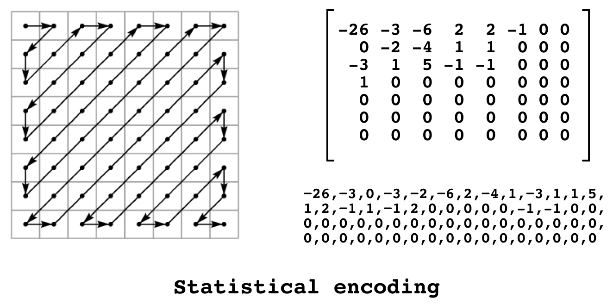
Reference: How JPG works
By now you might notice that there are a larger number of zeroes toward the bottom right of the matrix, so a Zig-Zag algorithm is applied to create a linear array of values from the block. After such a reordering, further compression with run-length encoding can yield even better results.
Reference: How JPG works
The full process of generating a JPG file involves more steps than what I outlined but that was my general understanding of how JPG compression works. If you have any further questions about JPG, Jon is the most qualified person to answer them.
JPG does extremely well with photographic images and effects like gradients, but not as well with line drawings or graphics with sharp contrast between the pixels. But an interesting feature of JPGs is the option of progressive JPGs.
Progressive JPGs
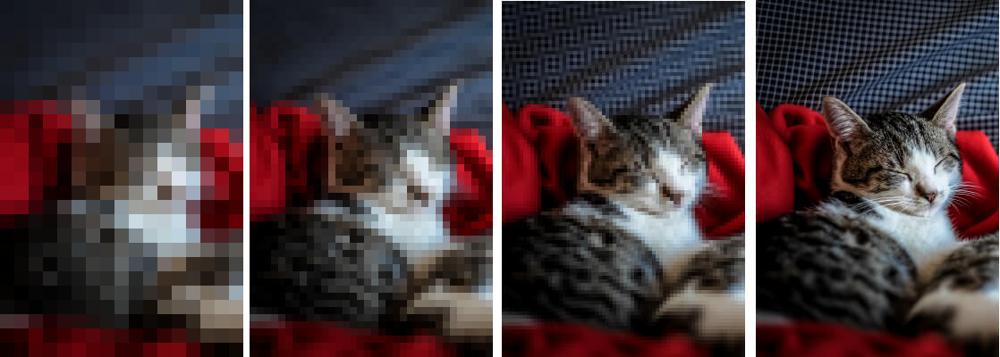
Image source: What is a progressive JPEG?
I learned about how progressive JPGs from Jon, in fact, when I read his article called Progressive JPEGs and green Martians. Non-progressive JPGs encode all the coefficients of each 8-by-8 block sequentially.
Instead of doing that, we can encode all the DC coefficients first, then some low-frequency AC coefficients, followed by high-frequency AC coefficients at the end.
Progressive JPGs require the encoder and decoder to make multiple passes through the image, and a typical progressive JPG has about 10 scans. So as the image gets decoded, you see a blurry image get progressively sharp as the image loads.
JPG optimisation tips
Use high quality source material
Alignment on the 8x8 pixel grid
Reduce contrast and saturation
Sepia images
Slight blurring
Reference: Finally understanding JPG
So based on our newfound understanding of JPG, there are a couple of tips we can apply to reduce the size of our JPG files without significantly compromising quality. These tips are by creator of the Compress-Or-Die image optimisation tool, Christoph Erdmann.
Ideally, tip 0 is to use an optimisation tool, preferably one you can automate. But the following are a bit more on the manual side of things.
First tip is relatively straightforward. Because JPG is lossy, if your source had already been compressed with lossy algorithms before, the end result isn't going to be as pretty when compared with a lossless source file like a PNG, for example.
2. Alignment on the 8x8 pixel grid
Reference: Finally understanding JPG
This 2nd tip I found very interesting. It involves aligning the sharp edges of your image to the grid to help the JPG algorithm not take patterns from the DCT patterns table that were intended for flat areas.
The image on the left is aligned on grid, while the one on the right is slightly misaligned. The content is essentially the same. but the file size for the aligned graphic ended up being more than 20% smaller. And you might not be able to see the difference very clearly, but the box edges are sharper for the first image as well.
3. Reduce contrast and saturation
Reference: Finally understanding JPG
If you do edit your own images, you might realise that your image editing software does not support Y,Cr,Cb colour model. But most image software support a colour mode called LAB, which stands for lightness, red/green and blue/yellow respectively.
Reducing the contrast of an image lowers the differences between data in the lightness channel, while a reduction in saturation corresponds to a contrast change in the colour channels.
Of course, the amount of tweaking you want to make to your image depends a lot on the art direction you're going for. It's also good to keep in mind that changes in the lightness channel do have a greater impact than that of the colour channels.
4. Sepia images
Una Kravets: CSS Blend Modes, Because…
Reference: Finally understanding JPG
Another pretty smart trick is to get rid of the colour information altogether, then colourising the image via CSS, with properties like filter or even in combination with blend modes. If blend modes are your thing, you must check out Una Kravet's amazing talk on blend modes, link in the slide.
5. Slight blurring
Reference: Finally understanding JPG
You could put in more manual effort and explicitly smooth out the sharp transitions in the colour channels, which will improve savings during the down-sampling phase.
Or you could also do what I did and apply a simple Gaussian blur on the parts of your image which aren't pertinent. A lazier way to benefit from some data savings as well.
You don't have to apply all of these tips to all your images because it really does depend on the context in which your images are appearing in. But it's good to know what options are available to you.
Speed, Quality, Size
Sorry, your browser doesn't support embedded videos,
but don't worry, you can download it
and watch it with your favourite video player!
Can't have 'em all
Although JPG had some patent issues, it is a standard, and developers are free to attempt improvements on the compression algorithm, and depending on what the end goal is, this may differ between implementations.
I mean, you could try to make it faster by reducing the encoding time. You could go for reducing the file size as much as possible. Or you could go for image quality, a bit more tricky but I consider it the “let's see how much visual information you can get away with tossing out“ factor.
JPG encoders, there are many
libjpeg
mozJPEG
Guetzli
libjpeg is the original JPG encoder, written in C and distributed under a custom permissive license. Since then, it has been forked and improved upon with encoders like MozJPEG, which targeted images on the web specifically.
They do some interesting stuff like trellis quantisation, which I cannot explain but makes the file size smaller at the expense of encoding time.
Guetzli is even newer, released by Google with a focus on image quality, but apparently it's really much slower than MozJPEG. Trade-offs, you know?
libjpeg-turbo
https://libjpeg-turbo.org/
libjpeg-turbo is an open source JPG image codec which is used by a large number of applications and operating systems. Chrome has been using it since version 11 and Firefox since version 5.0. Not too sure about WebKit though, they might still be using libjpeg.
And while I was trying to figure the image encoders used for GIFS, I unearthed the story of how PNG came about. If you already know this story like the back of your hand, please grant me your patience while I summarise what happened.
Turns out the LZW compression algorithm was patented by Unisys back in 1985. But when CompuServe used it to power GIF, they were not aware of its patent status. And Unisys didn't make any moves until 1993, when Mosaic came out.
GIF89a
Sorry, your browser doesn't support embedded videos,
but don't worry, you can download it
and watch it with your favourite video player!
Sorry, your browser doesn't support embedded videos,
but don't worry, you can download it
and watch it with your favourite video player!
Sorry, your browser doesn't support embedded videos,
but don't worry, you can download it
and watch it with your favourite video player!
If you squinted hard at my slides when I first mentioned GIFs, you may have noticed the specification said GIF87a. GIF89a was an extension that added features like transparency, and more crucially, the ability to animate the GIF.
Animated GIFs have had enormous staying power, seeing as how I've sent more than handful just earlier today. They had been all the rage on the web the moment browsers started to support them and in 1994, Unisys decided to enforce its patent.
By December of 1994, a court agreement between Unisys and CompuServe resulted in the announcement that Unisys would start collecting royalties from all software makers who used the GIF89a format.
Burn All GIFs day
November 5, 1999
Sorry, your browser doesn't support embedded videos,
but don't worry, you can download it
and watch it with your favourite video player!
https://burnallgifs.org/archives/
Outrage ensued. And in stepped The League for Programming Freedom and their idea to burn all GIFs on November 5, 1999. There was also a concrete plan developing on the usenet newsgroup comp.graphics on alternatives to the GIF format.
Portable Network Graphics (PNG)
8-byte signature of a PNG file
They came up with a little something called Portable Network Graphics, shortened from the proposed PING, for “Ping is not GIF”. Some other suggestions were quite fun, like TNT, for “The New Thing”.
PNGs outperformed GIFs in a multitude of ways. It was 100% open-source and patent-free. It could support thousands of colours versus GIF's 256. It handled transparency better.
But the designers of PNG made a conscious decision not to provide animation capabilities. And that was pretty much what kept the GIF alive all these years, because there was no viable alternative to animated GIFs.
In contrast to JPG, PNG compression is lossless. And it is a 2-part process. Delta encoding is a way of storing or transferring data via differences between sequential data instead of complete files. Diff-ing, essentially.
PNG filter algorithms
None
—
Zero
Sub
Sub(x) = Raw(x) - Raw(x-bpp)Byte A (to the left)
Up
Up(x) = Raw(x) - Prior(x)Byte B (above)
Average
Average(x) = Raw(x) - floor((Raw(x-bpp)+Prior(x))/2)Mean of bytes A and B, rounded down
Paeth
Paeth(x) = Raw(x) - PaethPredictor(Raw(x-bpp), Prior(x), Prior(x-bpp))A, B, or C, whichever is closest top = A + B − C
This is advantageous for compression when the data you're dealing with is linearly correlated, so the differences in values are often repeated, low values. Before compression, filter algorithms are used to prepare the image data for optimal compression.
For each scan-line of pixels, the current pixel is encoded in relation to the pixel on its left (A), directly above it (B), and at its top-left (C). These filters are not done per pixel though, but per channel, e.g. all red values, then all blue values, then green.
Developers of PNG also came up with some general rules of thumb to select the best filter based on the the type of image being processed.
DEFLATE compression algorithm
DEFLATE Compressed Data Format Specification version 1.3
After the filtering is done, the actual compression takes place, using the DEFLATE algorithm, which is also used in gzip compressed files and zip files.
So again, Colt McAnlis also has another in-depth explainer on how PNG works. In it, he highlights that the nature of image data brings about some interesting caveats when using DEFLATE.
What a difference 2 pixels can make
Reference: pngthermal
Specifically, how the exact dimensions of your image could have an impact on how well image compression works. If you look at the illustration, you'll see two nearly identical images of kiwi fruits. Only that the image on the right is 2 pixels wider.
For the smaller image, the bytes representing the second and third kiwis fell between the LZ match range and are encoded as highly efficient LZ matches, hence the dark blue thermal pattern.
But somehow, the extra 2 columns of pixels in the right image resulted in the bytes for the second and third kiwis to be out of match range, and they are encoded as non-matching. Thus causing the file size to bloat dramatically, doubling in size.
PNGs are a regularly-used format on the web, so let's go through some tips to keep their file sizes down as well.
Optimising PNG files
Reduce number of colours
Choose the right pixel format
Use indexed images, if possible
Optimise fully transparent pixels
Reference: Reducing PNG file Size
Again, if you can, use a tool. Automate all the things. But if you had to do some manual tweaking, one way to reduce the file size of your PNGs is by reducing the number of unique colours within the image.
Because this impacts the filtering stage, where a lower difference between adjacent pixels will decrease the range of values output from the filtering process. With more duplicate values, DEFLATE can compress better.
HOWEVER, this makes it a lossy process, which is why your human eye is absolutely required if you want to take this approach. Our current tools are still unable to discern visual quality at a level acceptable to human perception. For now.
Also, if you're not using transparency in your image, then don't bother with RGBA 32 bits per pixel. You could use the 24 bits per pixel truecolour format instead, or even just use a JPG, why not? For greyscale images, 8 bits per pixel will suffice.
3. Use indexed images, if possible
Full colour PNG
Indexed colour PNG
Reference: Reducing PNG file Size
If your image is neither a photograph nor contains lots of gradients, you could consider changing its colour mode to indexed. This will generate a reduced palette of colours from your source image.
What we're doing here is increasing the odds that adjacent pixels are pointing to the same colour, resulting in even more duplicate values at the end of the filtering process. More duplicate values, better compression, smaller file size.
Given the amount of possible savings, it might be worth it to just do an inventory of your images to see if you can get away with this conversion at scale.
4. Optimise fully transparent pixels
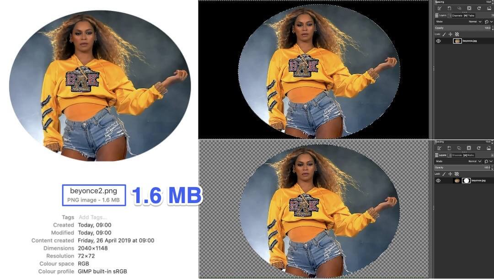
Masked portion of image filled with single colour
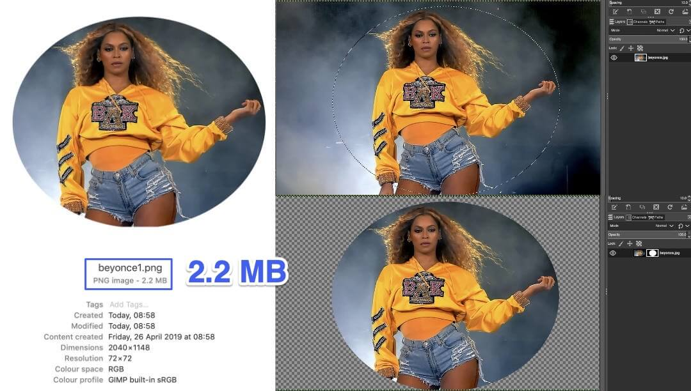
Masked portion of image untouched
Reference: Reducing PNG file Size
Say you need to crop out large swathes of background out of a logo image or something. You could try assigning transparency to selected colour values in the indexed-colour table.
Then, when the image is decoded in memory, the transparency will be set accordingly, but you can only do this with images in indexed mode. If you are using full RGB, make sure the bits of the image which will end up being alpha-ed out are of a single colour.
If you leave the parts of the image under the mask as is, even though your users won't see those pixels, they will definitely feel them. Because those pixels still get processed during encoding.
libpng
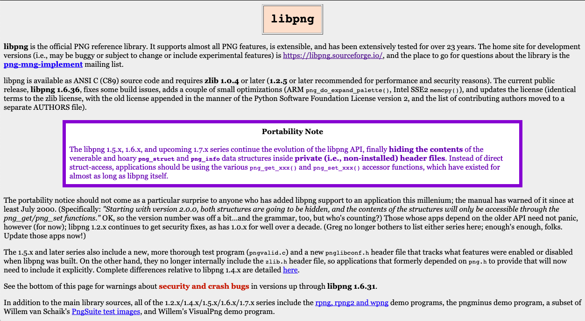
http://www.libpng.org/pub/png/libpng.html
libpng is the official PNG reference library, and is what Firefox uses for PNG support. So earlier, I mentioned libjpeg-turbo as a kind of segue into PNGs. But we really ought to talk about these image encoders in relation to browser rendering engines.
First of all, I'd like to clarify that I'm NOT a browser engineer, far from it. I know a C++ program when I see one, but that's about it. So not going to be too technical here. And if you ARE a browser engineer, I'd love to pick your brain after this.
What is a browser engine? 🤔
Source: Quantum Up Close: What is a browser engine?
Potch, Developer Advocate at Mozilla, wrote this awesome article about Project Quantum and browser engines when Firefox was doing its big core engine overhaul back in 2017.
Most web developers, myself included, probably see the browser engine as a magical black box that turns the code we write into web sites our users can somehow consume even if they are on a different browser, different device, different time zone.
What is a browser engine? 🤓
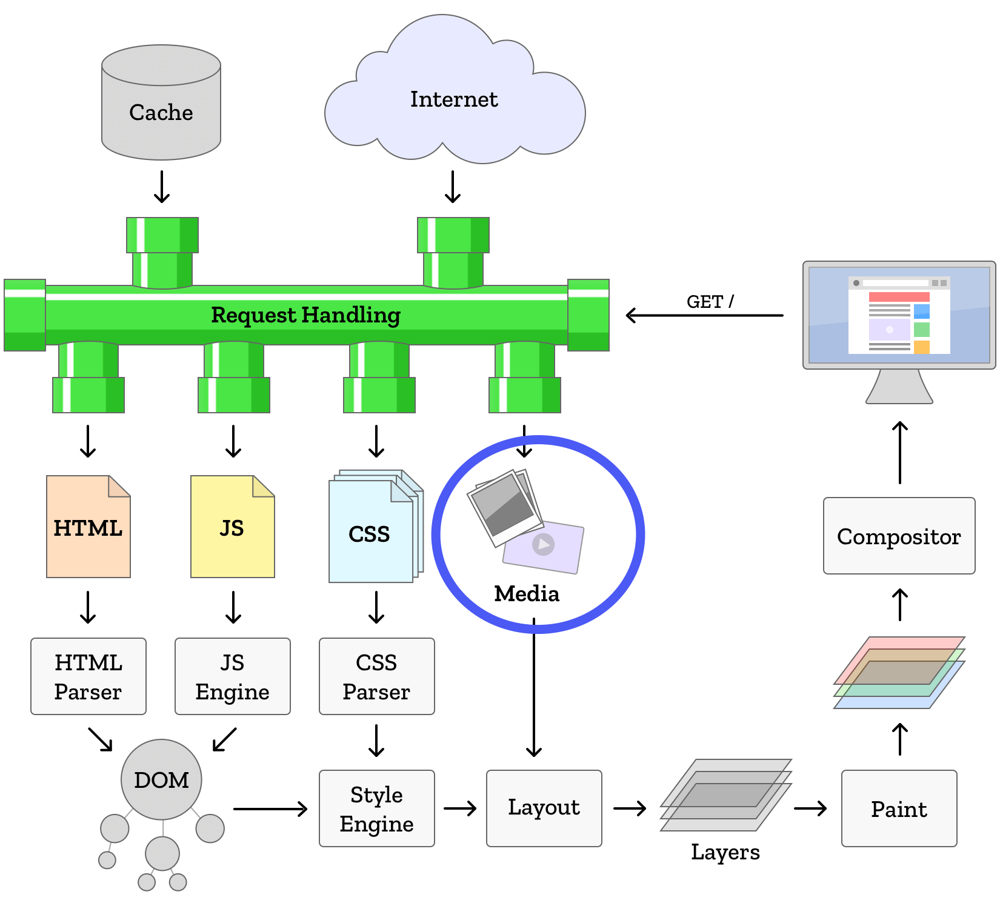
Source: Quantum Up Close: What is a browser engine?
Browser engines combine the structure and style of a web page to draw it on the screen, then figure out which parts can be interacted with. As you can see, lots of parsers and dedicated engines to do all of that work.
Today, I was planning to cover 2 portions of this diagram. So far we've touched on the blue-circled portion about media, specifically images.
Considering how much the browser has to do, it makes sense that the image encoding and decoding part of things is generally taken care of by third party libraries, some of which we've already talked about.
Image encoders in browsers
Chromium
Gecko
Both Chromium and Gecko have their source code available on GitHub, so we can dig in and find the encoders they're using. Okay, we've covered a lot about image data already.
I now want to move further down the pipeline to when that image data, together with pixel data from other sources, gets painted onto the screen. Because that part is extremely fascinating.
Browser rendering pipeline
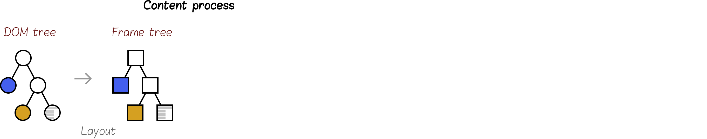
Reference: Introduction to WebRender – Part 1 – Browsers today
Nicolas Silva, who leads the Firefox GFX team, was a great help as he explained a lot of this stuff to me. Although each browser engine does things slightly differently, the general idea behind a modern rendering pipeline involves:
layout computation into a frame tree
generation of drawing commands called a display list
the painting of portions of that display list into layers
and finally, combining those layers into one final image through compositing
Because the displays that we use now are all raster displays, it is necessary for a rasterisation process to occur before graphics can be displayed on the screen. Decoded images are generally already in a raster format, but vector graphics or fonts need to be expressed as pixels as well.
Browser rendering pipeline
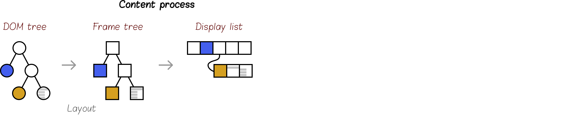
Reference: Introduction to WebRender – Part 1 – Browsers today
Nicolas Silva, who leads the Firefox GFX team, was a great help as he explained a lot of this stuff to me. Although each browser engine does things slightly differently, the general idea behind a modern rendering pipeline involves:
layout computation into a frame tree
generation of drawing commands called a display list
the painting of portions of that display list into layers
and finally, combining those layers into one final image through compositing
Because the displays that we use now are all raster displays, it is necessary for a rasterisation process to occur before graphics can be displayed on the screen. Decoded images are generally already in a raster format, but vector graphics or fonts need to be expressed as pixels as well.
Browser rendering pipeline
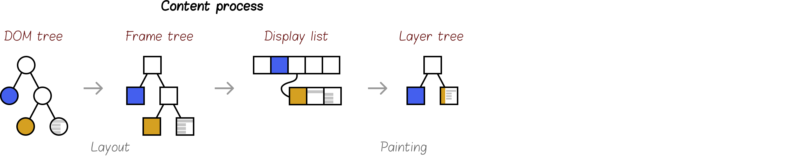
Reference: Introduction to WebRender – Part 1 – Browsers today
Nicolas Silva, who leads the Firefox GFX team, was a great help as he explained a lot of this stuff to me. Although each browser engine does things slightly differently, the general idea behind a modern rendering pipeline involves:
layout computation into a frame tree
generation of drawing commands called a display list
the painting of portions of that display list into layers
and finally, combining those layers into one final image through compositing
Because the displays that we use now are all raster displays, it is necessary for a rasterisation process to occur before graphics can be displayed on the screen. Decoded images are generally already in a raster format, but vector graphics or fonts need to be expressed as pixels as well.
Browser rendering pipeline
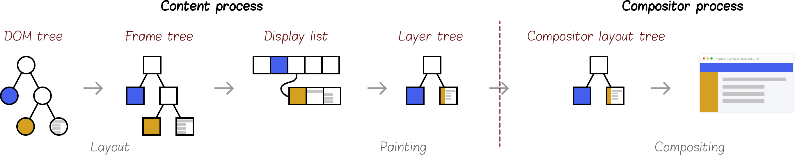
Reference: Introduction to WebRender – Part 1 – Browsers today
Nicolas Silva, who leads the Firefox GFX team, was a great help as he explained a lot of this stuff to me. Although each browser engine does things slightly differently, the general idea behind a modern rendering pipeline involves:
layout computation into a frame tree
generation of drawing commands called a display list
the painting of portions of that display list into layers
and finally, combining those layers into one final image through compositing
Because the displays that we use now are all raster displays, it is necessary for a rasterisation process to occur before graphics can be displayed on the screen. Decoded images are generally already in a raster format, but vector graphics or fonts need to be expressed as pixels as well.
Reference: Let's build a browser engine!
For anyone who is not a browser engineer, I highly recommend going through this series of articles on how to build a browser engine by Matt Brubeck. He's a research engineer with Mozilla and works on Servo.
Servo is a prototype web browser engine written in Rust by the team at Mozilla. It's essentially a new rendering engine and Mozilla is gradually replacing the old Gecko code, which has been around for a REALLY long time, with the stable parts of Servo. And that's what Project Quantum is all about.
The first version of Firefox with a Servo component enabled was 57, back in 2017, and since then, more and more of Servo has been making its way into Firefox.
Rasterisation (1/3)
Simple rasteriser for painting rectangles
pub struct Canvas {
pub pixels: Vec<Color>,
pub width: usize,
pub height: usize,
}
impl Canvas {
/// Create a blank canvas
fn new(width: usize, height: usize) -> Canvas {
let white = Color { r: 255, g: 255, b: 255, a: 255 };
Canvas {
pixels: vec![white; width * height],
width: width,
height: height,
}
}
// …
}Source: Let's build a browser engine!
Matt built his toy browser engine in Rust, and it is open-sourced, available on GitHub. He chose to write his own rasteriser, which only paints solid rectangles. But from this, we can sort of see how browser engines paint image data from memory onto the screen.
I'm not that familiar with Rust, to be honest, but the code is relatively understandable when he explains it in his article. And we're only going to be looking at the paint portion of this toy browser engine. Here, we can see that all the pixels will be stored in a Canvas.
Rasterisation (2/3)
Simple rasteriser for painting rectangles
fn paint_item(&mut self, item: &DisplayCommand) {
match *item {
DisplayCommand::SolidColor(color, rect) => {
// Clip the rectangle to the canvas boundaries.
let x0 = rect.x.clamp(0.0, self.width as f32) as usize;
let y0 = rect.y.clamp(0.0, self.height as f32) as usize;
let x1 = (rect.x + rect.width).clamp(0.0, self.width as f32) as usize;
let y1 = (rect.y + rect.height).clamp(0.0, self.height as f32) as usize;
for y in y0 .. y1 {
for x in x0 .. x1 {
self.pixels[y * self.width + x] = color;
}
}
}
}
}Source: Let's build a browser engine!
Painting a rectangle on the canvas involves looping through the rows and columns of the canvas. This here is a helper method to ensure the loop doesn't go beyond the bounds of the canvas.
Rasterisation (3/3)
Simple rasteriser for painting rectangles
/// Paint a tree of LayoutBoxes to an array of pixels.
pub fn paint(layout_root: &LayoutBox, bounds: Rect) -> Canvas {
let display_list = build_display_list(layout_root);
let mut canvas = Canvas::new(bounds.width as usize, bounds.height as usize);
for item in display_list {
canvas.paint_item(&item);
}
canvas
}Source: Let's build a browser engine!
Finally, we have the actual paint() function, which builds the display list (actual function not included here) then paints the data to the canvas, pixel by pixel, line by line until the entire canvas is filled up.
Like I mentioned, this particular implementation only supports solid colours. Because doing something like transparency would require additional blending to calculate the pixel colour values.
The graphics backend is an array of bytes and a for loop that goes and says: go from the left edge of the rectangle to the right edge and write the same colour over and over again into this array.
—Matt Brubeck, Bay Area Rust Meetup (Nov 2014)
¯\_(ツ)_/¯
Matt had given a short talk at the Bay Area Rust Meetup, where he talked about this project, and gave an excellent answer to the question, so what is your graphics backend?
It's an array. It's an array, AND a for-loop.
Graphics libraries
Skia
WebRender
Core Graphics
Cairo
Pango
Of course, commercial browsers make use of graphics APIs and libraries to implement rasterisation, because clearly what we expect from the web is much more than just solid coloured rectangles. Browser makers need functions for rendering text, polygons, lines, gradients, curves…you know, all of the things.
This is a list of common graphics libraries currently being used to power the popular browser engines. Chrome uses the Skia graphics library almost exclusively for all graphics operations, even text rendering.
Firefox used to use CoreGraphics and Cairo but eventually simplified the number of backends they ran on. And after the smoke clears on their big engine overhaul, Firefox will eventually use Skia for canvas, and WebRender for everything else.
Safari, which is based on WebKit, apparently used Apple's Core Image libraries, but I'm not sure what they use right this minute.
Painting
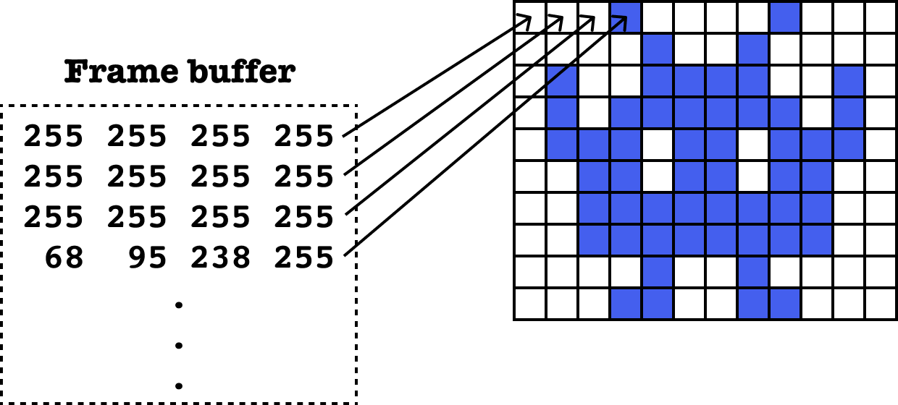
Reference: The whole web at maximum FPS: How WebRender gets rid of jank
The concept of painting still remains the same though, with displays accessing the frame buffer for information on every pixel that needs to be displayed onto the screen in RGBA format. A frame is considered rendered when all the pixels have been filled in by the renderer.
This process is constantly being repeated every time something on the page changes. But most of the time, only a part of the screen is changing. Browsers will figure out what changed and only update those relevant pixels. This is called invalidation.
Invalidation as an optimisation technique has been around since the early browsers, but they could only get us so far. Though invalidation techniques work well for small changes, like a blinking caret on an input field, sweeping changes affecting most of the screen required something more.
Compositing (1/2)
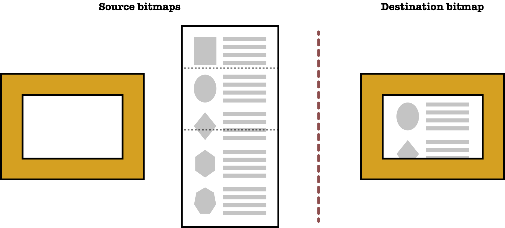
Reference: The whole web at maximum FPS: How WebRender gets rid of jank
Browser engineers then came up with the idea of having layers. With layers, the browser would only have to repaint the layer which changed, or sometimes, simply rearrange the layers, as is the case when you're trying to scroll a web page.
For scrolling, the compositing process starts with source bitmaps, and a target bitmap which is what ends up displayed on the screen. The compositor will copy the layers that remain unchanged, like the background, to the destination bitmap.
After that, it will figure out which portion of the scrollable content needs to be visible, then copies those bits over to the destination as well.
Compositing (2/2)
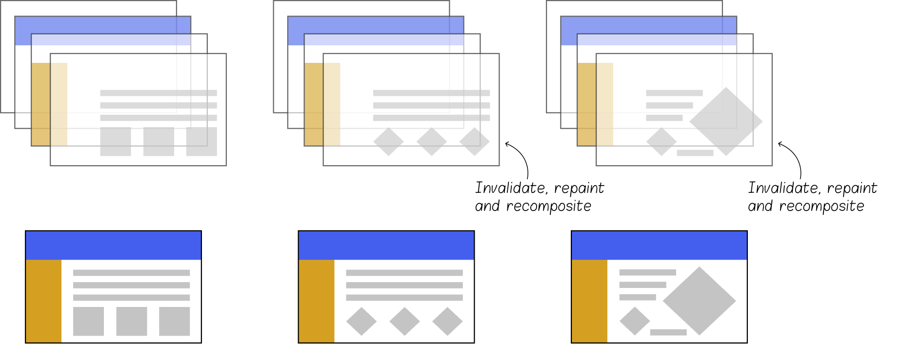
Reference: GPU Accelerated Compositing in Chrome
The compositor is also responsible for applying the necessary transformations, depending on the layer's CSS transform properties, to each compositing layer's bitmap before compositing it.
Having layers means that when the browser invalidates a layer, only the contents of that layer need to be repainted, then recomposited.
Making use of the GPU (1/2)
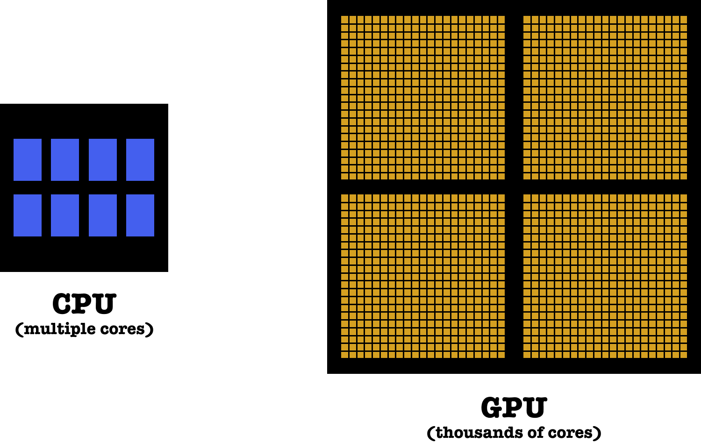
It used to be that all the work on the rendering pipeline was done by the CPU, on the main thread. But the CPU has a task list from here to moon and back, it's a very busy piece of hardware.
Graphics Processing Units or GPUs used to be the domain of the video games industry, but are now pretty much a general purpose technology and an integral part of computer architecture. GPUs have exceptional parallel processing capabilities, and are really good at rendering frames fast.
So the next thing browser engineers did was to move rendering tasks to the GPU.
Making use of the GPU (2/2)
Sorry, your browser doesn't support embedded videos,
but don't worry, you can download it
and watch it with your favourite video player!
Reference: Hardware acceleration and compositing
For our current browser landscape, paint and composite are relatively separate processes in all the major browsers. And browser engineers are trying to move both of them off the main thread.
As it turns out, it's much easier to move compositing to the GPU because GPUs are great at blitting quads. Blitting being the process of combining several bitmaps into one with a boolean function.
Paint, on the other hand, is trickier to move, because the GPU is not necessarily good at painting all the things. It's really fast for blitting surfaces, but not for drawing bezier curves and shapes, for example. Text rendering isn't that great on GPU either.
GPU rasterisation in Chromium
Sorry, your browser doesn't support embedded videos,
but don't worry, you can download it
and watch it with your favourite video player!
Reference: Software vs. GPU rasterization in Chromium
The Chromium Project has very detailed design documentation which outline exactly what goes on under the hood with Blink and cc, the Chrome compositor.
In Chromium, the page is divided up into tiles of 256 by 256 pixels for more efficient rasterisation. Paint commands which don't impact certain tiles get ignored and only the tiles which need to be updated get rasterised again.
The old way of rasterising a tile makes use of the Skia library, which uses a scanline algorithm to create a bitmap that is sent to the GPU to be drawn on screen. The new method is also executed by Skia, but with a GPU backend called Ganesh. And it's faster because there is no copying involved.
But the challenge of having the GPU rasterise small, complicated shapes like fonts is not trivial at all, especially for the CJK languages with thousands of glyphs. So it seems like both the CPU and GPU will still have their roles to play in the rasterisation process.
If you could have a do-over…
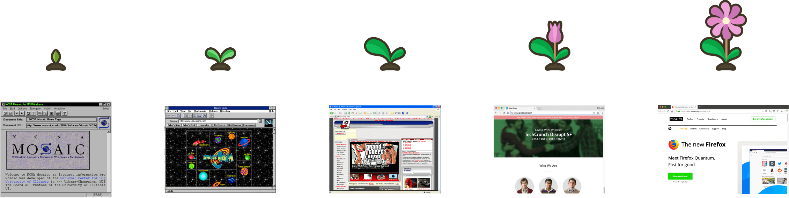
What if we actually need a butterfly instead?
Browser rendering engines were designed at a time when GPUs were not commonplace outside gaming machines, and CPUs didn't have as many cores as they do now. Websites also weren't that complicated at the time.
Historically, 2D graphics APIs such as cairo and skia have focused on the 2D rendering side of things. But the web platform evolved and we started to do things like animations and perspective transformations in the browser.
To offer first-class support for these capabilities, browsers added them at the compositor level, simply because it was hard or inadequate to do so within cairo or such graphics APIs.
So essentially, browser engines were improved upon based on their existing implementation as computer hardware evolved. Developments such as separating paint and compositing were part of that improvement.
WebRender (1/2)
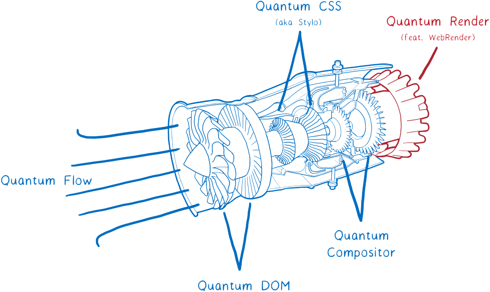
The whole web at maximum FPS: How WebRender gets rid of jank by Lin Clark
This is why WebRender is so interesting. It is a 2D renderer for the web, which started out as Servo‘s graphics engine.
WebRender removes the separation between painting and compositing, and instead makes use of the GPU's exceptional parallel processing power to handle painting and compositing in a single step through various techniques that make use of the display list.
And because WebRender was written from scratch for the needs of modern web specifications, functionalities like animation and 3D was built directly into it at the same level as the 2D rendering primitives.
WebRender (2/2)
Lin Clark, who writes the best technical articles, has a very in-depth and easy-to-read article on MozHacks on all the details of how WebRender works. And that was the basis for a lot of the stuff I mentioned.
I think the developments happening around WebRender are really cool and if you would like follow along as well, the Mozilla Gfx team also maintains a blog with project updates and explainers on what goes on under the hood.
Acknowledgements
🙏 Big thank you to these beautiful human beings who answered my noob questions 🙏
I am so grateful to these beautiful people who gave me time of day, and either answered my noob questions on browser rendering, or took the effort to point me in the right direction. Even though they're not here right now, I'd like to say a big thank you to all of them.
References
And I also read a lot more than is on here, but this list only contains links to what I actually reference in my talk. If all this is as fascinating to you as it is to me, come chat! I'll share my longer list of resources with you as well.
This talk is dedicated to browser engineers everywhere.
I owe my career to you.
I love the web. Truly. And I know that it takes many different groups of people contributing in their own way, that makes the web what it is. But today, I want to show my appreciation for browser engineers. Some of them have made this their full time careers, others have done so as OSS contributors on their own time.
Even though browsers are not the only way to access information on the web, they are the predominant medium at the moment. So thank you, browser engineers everywhere, for striving to make the web experience smoother, faster and more accessible for all of us.